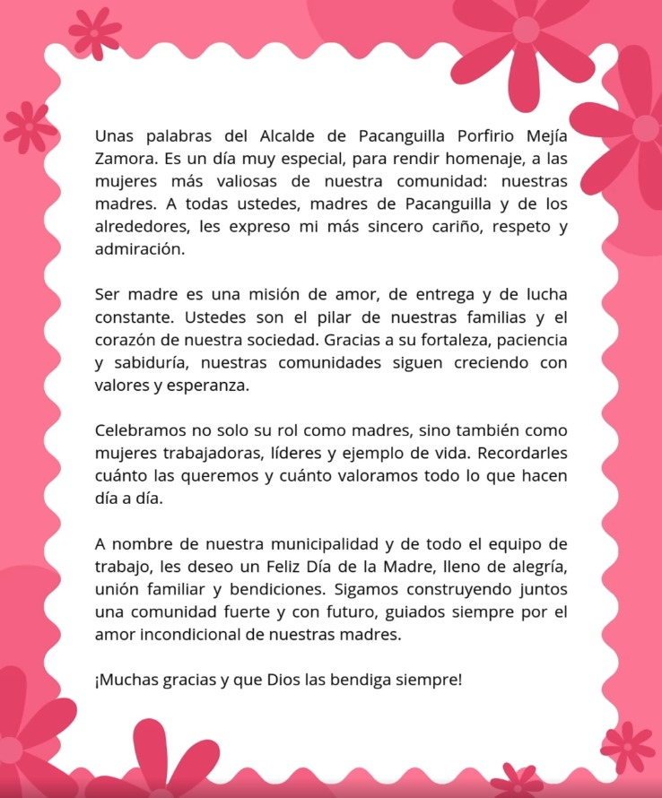
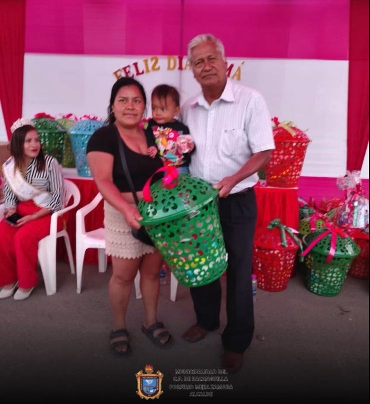
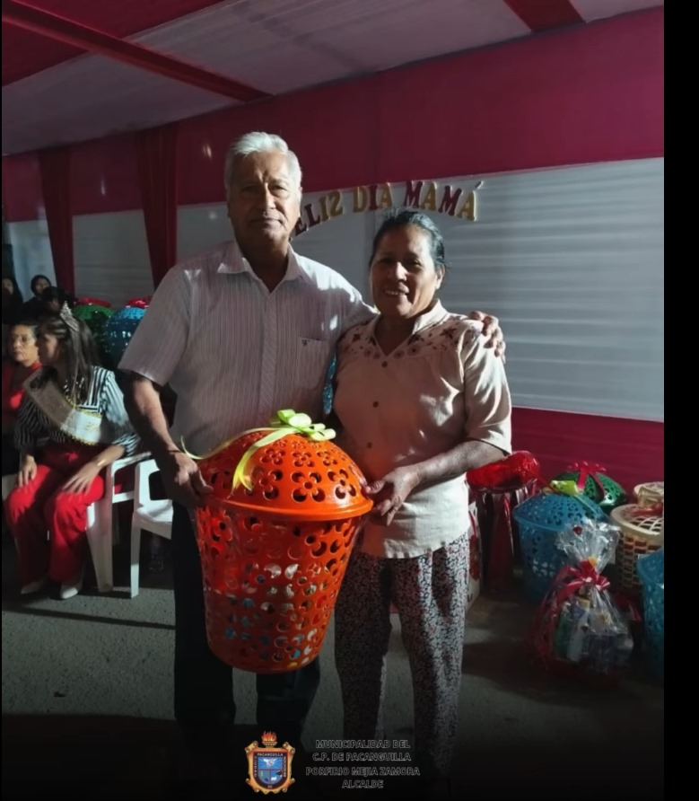
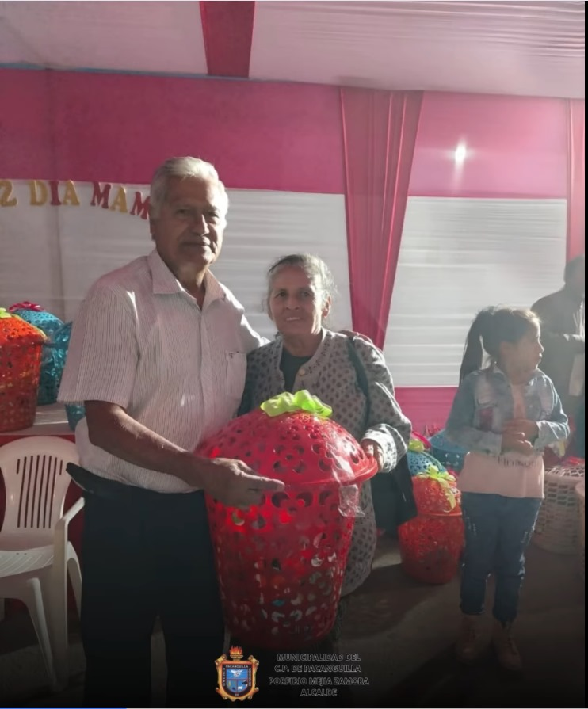

Celebración por el Día de la Madre
El pasado 12 de mayo, la Municipalidad de Pacanguilla organizó una emotiva ceremonia en honor al Día de la Madre, con presentaciones artísticas, sorteos y reconocimientos especiales a las madres destacadas de la comunidad. Fue una jornada llena de alegría, unión y homenaje.



